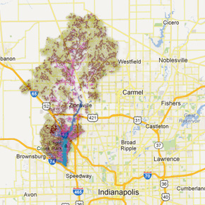

Eagle Creek Watershed
Eagle Creek Watershed is located in Central Indiana approximately 10 miles northwest of downtown Indianapolis. The watershed landscape is relatively flat to undulating, and is made up of a 162 square miles of drainage basin upstream of the Eagle Creek Reservoir dam. The Eagle Creek Reservoir is used as a public drinking water supply for the City of Indianapolis. Eagle Creek Watershed overlies four different counties, namely, Marion, Hendricks, Boone, and Hamilton. Agriculture is the dominant land-use in the watershed (approximately 60%), with corn and soybeans being the predominant crops. However, high and low density land-use are also currently increasing due to the increasing Indianapolis population and associated increases in urban/ suburban infrastructure developments.
Below are some links you can use to learn more about the watershed landscape, and opportunities for implementing conservation practices. Check them out!
OutlineThis image shows the boundary for Eagle Creek Watershed (HUC-11) above the reservoir dam. WRESTORE has been currently set to investigate implementation of conservation practices in this catchment area of the Eagle Creek Watershed. |
Sub-basinThis image shows all the 130 sub-basins in the watershed identified using the United States Geological Survey topographic map. These sub-basins are connected to each other based on the topography and are used to calculate the flow of water from upstream areas to downstream areas. |
StreamsThis image shows the various streams and tributaries (and some main ditches),that build the stream network of Eagle Creek Watershed. |
Potential StorageThis image shows the various sites (depicted by polygons) on agricultural land where runoff will tend to accumulate because of depression in the topography, and low infiltration properties of the soil. Though the landscape also has many smaller sites where runoff accumulation can occur,this image only shows sites with areas of polygons greater or equal to 1000 square meters (i.e. 0.25 acres). These sites provide excellent opportunities for creating water storage practices such as wetlands, ponds, etc. that slow, store, and treat runoff. This helps in not only preventing erosion and fertilizer losses, but also helps improve availability of water in the landscape for crop use during dry seasons. |
Land Use Land CoverageThis image shows the land use land cover in the Eagle Creek Watershed, observed in 2008. The data for this image was obtained from the United States Department of Agriculture – Natural Resources Conservation Service. |

SoilThis image shows the various soil types and their drainage characteristics in the Eagle Creek Watershed. |